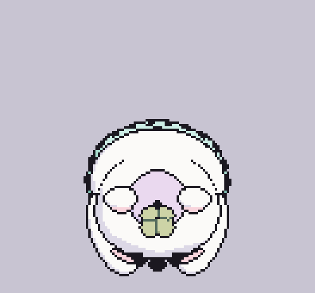
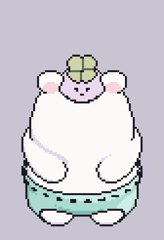
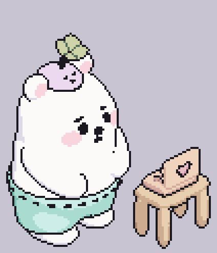
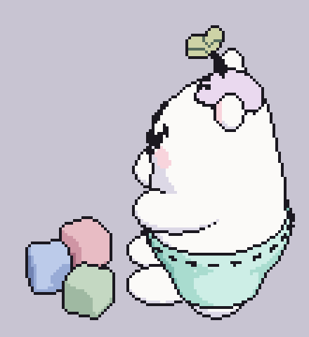
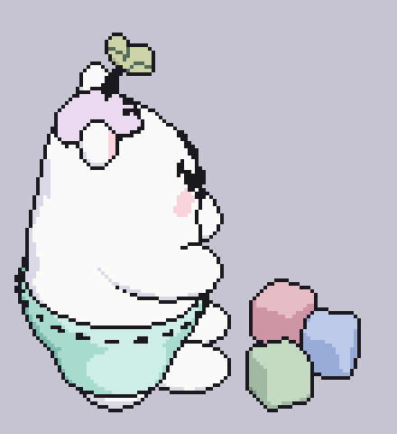
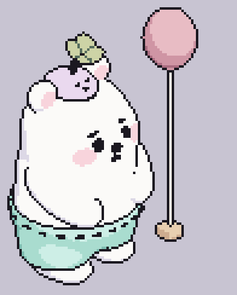

lean p1 · A4 · set_lean/ · 3 clips
leans on a big toy block. sheet sheet_lean.png · preview


Every stage rendered in this run, each clip's gif next to idle, scaled up with pixelated rendering.
Judge cuteness here and then on the real desktop (AC16). Serve with
python3 -m http.server 8771 --directory experiments/mascot/out and open bear3d/sheets.html.
The full sheet PNGs are big (up to 18 000 px tall): open them one at a time.
set_lean/ · 3 clipsleans on a big toy block. sheet sheet_lean.png · preview
anim_f/ · 8 clipsweight shift, ear twitch, tummy rub, small wave, look up/down, peek, butt wiggle. sheet sheet_f.png · preview


anim_g/ · 8 clipsrock on heels, head tilt, scratch, stretch, yawn, shake off, sneeze, nod off. sheet sheet_g.png · preview


anim_p/ · 16 clipssit, sway, lie on the belly or back, curl up, squat. sheet sheet_p.png · preview







anim_m/ · 12 clipstiptoe, skip, shuffle, back waddle. sheet sheet_m.png · preview


anim_t/ · 6 clipshop, spin, roll, trip, pounce, slide stop. sheet sheet_t.png · preview


anim_e/ · 9 clipswave, nod, shake, greet, sad, surprised, jump, dodge, remind. sheet sheet_e.png · preview


anim_x/ · 10 clipsshrug, facepalm, thumbs up, clap, point, shy, laugh, pout, proud, head scratch. sheet sheet_x.png · preview


anim_r/ · 7 clipsdangle, land, dizzy, flinch, giggle, cursor watch, morning stretch. sheet sheet_r.png · preview

anim_s/ · 6 clipshead bob, foot tap, dance, evening yawn, tap glass, check watch. sheet sheet_s.png · preview


anim_w/ · 5 clipssit on a window edge, dangle, peer, doze, stand. sheet sheet_w.png · preview


set_sit_a/ · 9 clipstea, snack, knit. sheet sheet_sit_a.png · preview


set_sit_b/ · 12 clipsnotebook, laptop, headphones, umbrella. sheet sheet_sit_b.png · preview





set_play/ · 15 clipsball, bubbles, yoyo, blocks, balloon. sheet sheet_play.png · preview








set_out/ · 15 clipsplant, sweep, snowman, fishing, nightcap. sheet sheet_out.png · preview


anim_z/ · 11 clipswindmill, hiccups, coin, snowflake, butterfly, peekaboo, moonwalk, four seasonal hats. sheet sheet_z.png · preview